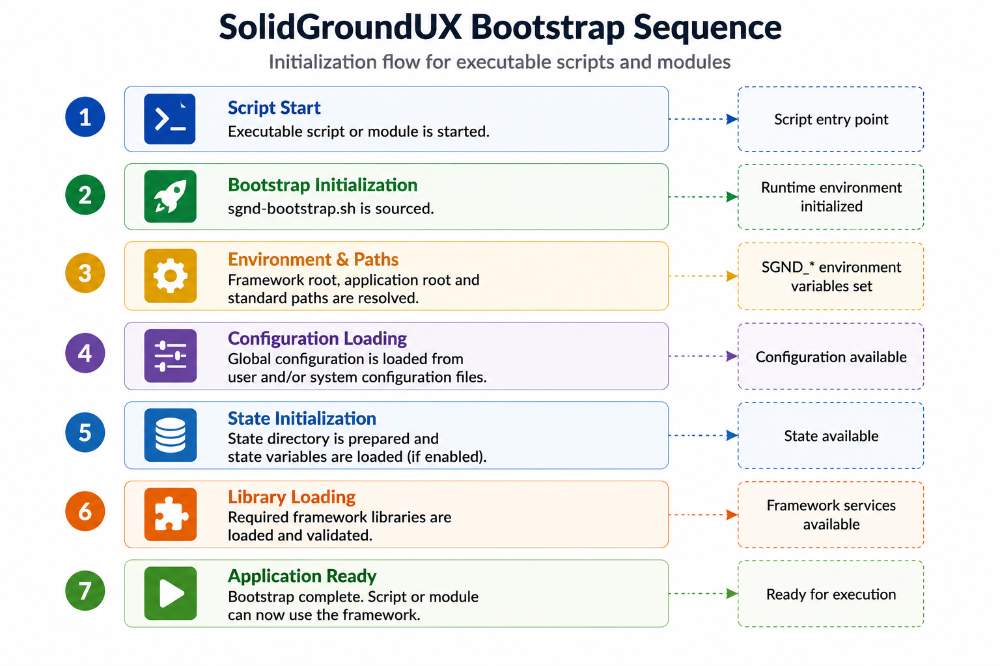

The bootstrap layer is the foundation of the SolidGroundUX runtime model.
Its purpose is to give executable scripts and reusable libraries a predictable starting point before application-specific logic begins. It resolves framework locations, initializes common globals, loads requested libraries, prepares configuration handling, and registers the framework's built-in command-line arguments.
In normal use, application scripts should not need to reproduce this logic. Instead, they should follow the bootstrap section shown in the executable template. The template demonstrates the expected startup pattern and should be treated as the canonical example for new executable scripts.
A typical executable script using SolidGroundUX starts with a small bootstrap block. That block sources the framework bootstrap library and then hands control to the framework initializer.
Conceptually, the startup sequence is:

The exact implementation is intentionally hidden behind the bootstrap API. The important point is that every bootstrapped script enters its main logic with the same basic runtime assumptions.
The bootstrap environment is responsible for resolving the filesystem locations used by the framework.
This includes paths for framework libraries, internal helper scripts, shared assets, configuration files, templates, documentation, and other expected runtime locations.
By resolving these paths centrally, scripts do not need to hard-code installation paths or guess where framework components are located. This also allows the same code to work both during development and after deployment, provided the expected layout is available.
SolidGroundUX uses a dependency declaration mechanism to determine which libraries should be available to a script.
Scripts can populate `SGND_USING` to declare framework libraries they depend on. During bootstrap, the framework resolves these entries and sources the required files automatically.
This keeps executable scripts smaller and makes dependencies explicit near the top of the file. Instead of scattering `source` statements throughout the script, the script declares what it needs and lets the bootstrap layer perform the actual loading.
Core libraries needed by the bootstrap process itself are loaded automatically. Additional libraries are loaded based on the script's declared requirements.
The bootstrap process also prepares common SolidGroundUX global variables.
These globals describe the runtime environment and provide shared values used by other framework components. They may include resolved paths, script metadata, runtime flags, configuration locations, and other common settings.
Configurable values are described through the current scoped registries. Framework settings use `SGND_FRAMEWORK_GLOBALS`; application settings use `SGND_SCRIPT_GLOBALS`; runtime definitions and defaults are supplied by the bootstrap/environment layer.
These registries bridge static defaults, system/user configuration files, runtime state, and command-line overrides without requiring each executable to implement its own configuration model.
Configuration handling is integrated into the bootstrap lifecycle.
When configuration-related globals are available, the framework can initialize configuration metadata, determine expected configuration files, load values, and apply them before the main application logic runs.
This means a script can define the values it cares about, while the framework handles the repetitive work of loading, overriding, and exposing those values.
The result is a consistent configuration model across scripts without requiring every executable to implement its own configuration parser.
Every executable bootstraps its own SolidGroundUX framework instance. Ordinary shell globals therefore remain local to that process and are not automatically shared with executables started from it.
SolidGroundUX preserves selected user-level runtime choices through a transferable framework state file. The file is identified by `SGND_FRAMEWORK_STATEFILE` and is normally resolved as:
After the normal framework configuration has been loaded, bootstrap recalculates this filename from the effective user configuration directory. If the file exists, the variables listed in `SGND_FRAMEWORK_STATE` are loaded from it. If it does not exist, bootstrap creates it from the current effective values.
The framework state is applied before the UI palette and style are loaded. This allows a theme or logging choice changed by one SolidGroundUX executable to be used by subsequently started executables, even though each executable creates its own framework instance.
Only explicitly listed variables are transferable. Process-specific values such as script metadata, progress state, start times, and application-local state remain private to the current executable. The framework state file is therefore a small runtime overlay, not a dump of all framework globals and not a replacement for the normal system and user configuration files.
The current transferable set is maintained in `SGND_FRAMEWORK_STATE` and includes the active console and file log levels, UI style and palette, and the date format used by `say()` output. Runtime functions that change one of these settings should update the framework state file when the change must remain visible to later framework instances.
Console output and logfile output are controlled independently.
`SGND_CONSOLE_LOG_LEVEL` controls which `say()` messages are rendered to the terminal. `SGND_FILE_LOG_LEVEL` controls which messages are appended to the resolved logfile. Both settings support the levels:
A message can therefore be suppressed on screen while still being recorded in the logfile, or displayed on screen while file logging is effectively disabled. Setting `SGND_FILE_LOG_LEVEL` to `silent` disables logfile output without requiring a separate enable flag.
`say()` evaluates the console and file thresholds separately. Matching logfile entries are always written with a date/time prefix using `SAY_DATE_FORMAT`, regardless of whether timestamps are currently shown on the console.
The active log levels are part of `SGND_FRAMEWORK_STATE`, so changes saved during one framework instance become the starting values for later SolidGroundUX executables run by the same user.
Bootstrapped executables receive a set of framework-provided command-line arguments.
These built-in options cover common framework behavior such as help output, version information, diagnostic output, tracing or debugging behavior, and configuration-related overrides.
Application-specific arguments can be added by the executable itself, but common framework behavior remains standardized across all bootstrapped tools.
This gives SolidGroundUX applications a shared command-line personality: once a user understands the standard options for one tool, the same expectations apply to the others.
The executable template contains the preferred bootstrap structure for new command-line tools.
When creating a new SolidGroundUX executable, start from the template rather than copying bootstrap code from an existing script by hand. Existing scripts may contain historical details, local deviations, or project-specific behavior, while the template represents the current intended pattern.
In practical terms, the template shows where to declare dependencies, where to define globals, where to register custom arguments, and where application logic begins after bootstrap has completed.
The bootstrap layer exists to keep scripts boring in the best possible way.
A bootstrapped executable does not need to rediscover the framework, reimplement argument parsing, manually source every common library, or invent its own configuration lifecycle.
That work is centralized once, tested once, and reused everywhere.
This is one of the main reasons SolidGroundUX behaves like a framework rather than a collection of unrelated Bash helpers.